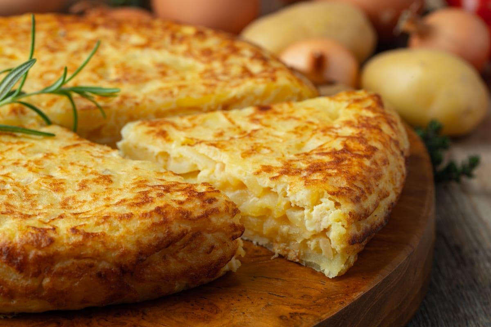

Tortillas

Description
Tortilla is a traditional dish made with eggs, potatoes, and sometimes onions. It is golden on the outside and soft on the inside, perfect as a main dish, snack, or tapas. Simple yet flavorful, it showcases the deliciousness of basic ingredients combined in a comforting, hearty way.
Ingredients
- 4 large potatoes, peeled and thinly sliced
- 1 onion, thinly sliced (optional)
- 6 eggs
- Olive oil (for frying)
- Salt (to taste)
Steps
- Cook Potatoes and Onion: In a pan, heat olive oil and fry the potatoes and onion until tender. Drain excess oil and season with salt.
- Mix with Eggs: Beat the eggs in a bowl, add the cooked potatoes and onion, and mix well.
- Cook the Tortilla: In the same pan, heat a little olive oil, pour in the mixture, and cook on medium heat. When set, flip the tortilla using a plate and cook the other side.
- Serve: Let it cool slightly, then slice and serve.
Home